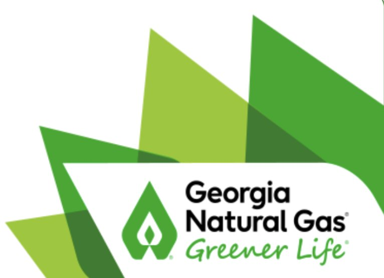
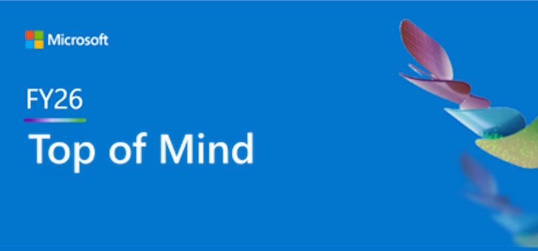
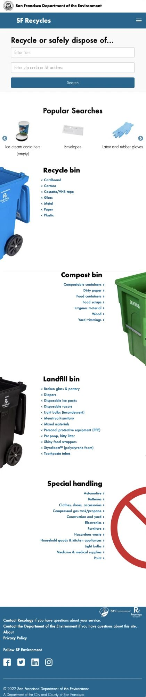

Marketing, communications & organizational leader
I turn audience insight into stronger brands, product growth and organizational impact.
I’m a marketing and communications leader who builds brands, brings products to market and drives measurable growth. Across consumer, enterprise and public-sector organizations, I’ve led strategies, teams and operations that deliver results, while building AI-enabled capabilities that improve how work gets done.



Where I’ve made an impact


Selected outcomes
Results across brand, product and people
- #1tested Delta Air Lines ad for driving brand difference and affinityDelta Air Lines
- +11%subscribers in three months; $1.7M projected customer lifetime valueSouthern Company
- +495%year-over-year monthly active users for a civic appCity & County of San Francisco
- +88%year-over-year employee understanding of mission and values (relative increase, annual survey)City & County of San Francisco
My work
Choose an area to explore

Strategic Communications
Executive counsel, employee engagement, organizational change and external communications.
Explore Communications
Leadership & Operations
Team leadership, organizational strategy, resource allocation and operational excellence.
Explore Leadership
Brand
Brand strategy, customer insight, integrated campaigns and creative direction.
Explore Brand
Product Marketing
Positioning, go-to-market strategy, product adoption and commercial growth.
Explore Product MarketingOne throughline, four disciplines
Whether I’m building a brand, bringing a product to market or helping employees navigate change, my work starts with understanding people and translating that insight into strategies that drive action and measurable outcomes.
I’ve led brand, product marketing, communications and operations independently and together—from global companies like Microsoft and Delta Air Lines to the City & County of San Francisco, where I led a multidisciplinary team supporting 20+ services and technology products.
See my experience and credentialsInterested in working together? Let’s talk.
I’m open to full-time and consulting work in brand, product marketing, communications and organizational leadership.